مبانيك في صفحة واحدة
دورة العقار، رحلة المستأجر، الطبقات المشتركة، الأدوار، وأرقام محفظتكم الحقيقية داخل المنصة — في صورة واحدة تغني عن قراءة الدليل كاملًا.
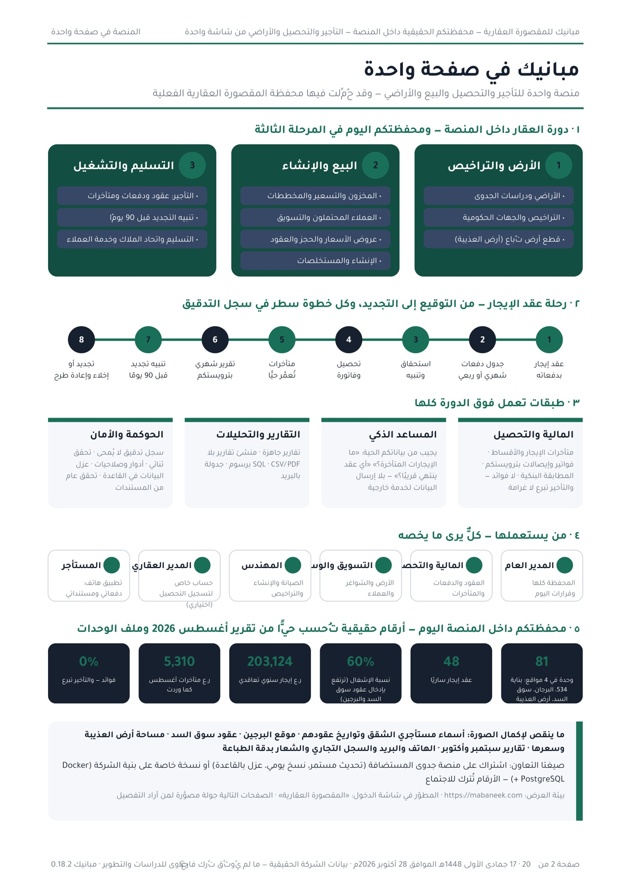
عن هذا الدليل
هذا الدليل يعرض منصة «مبانيك» — منصة التطوير والتأجير العقاري من جدوى للدراسات والتطوير — وقد حُمِّلت فيها بيانات المقصورة العقارية الفعلية كما زوّدتمونا بها: التقرير المعتمد لشهر أغسطس 2026 لبناية الاستقامة (مبنى 534، أرض 1742، الخوير الجنوبية — شارع المها)، وملف الوحدات المملوكة في البرجين، ومحلات سوق السد التسعة، وأرض العذيبة المعروضة للبيع. كل لقطة في الصفحات التالية من المنصة نفسها على هذه البيانات.
- المحفظة داخل المنصة اليوم: 81 وحدة في 4 مواقع، منها 80 وحدة في محفظة التأجير و48 عقد إيجار ساريًا؛ نسبة الإشغال 60٪، الإيجار السنوي التعاقدي 203,124 ر.ع، والمتأخرات 5,310 ر.ع — كلها تُحسب حيًّا من العقود والدفعات.
- القاعدة التي التزمنا بها: ما لم يرد في مصادركم تُرك فارغًا لا مخترعًا — المساحات والأسعار غير المزوَّدة تظهر «—» أو «غير مزوَّدة»، وأسماء مستأجري الشقق «الاسم غير مزوَّد»، والدفعات مسجَّلة للأشهر الموثَّقة فقط ثم من شهر الاستيراد فصاعدًا.
- لا مشترين ولا عملاء محتملين ولا مقاولين ولا مستخلصات في هذه النسخة لأن الشركة لم تزوّدنا بدورة بيع؛ شاشات البيع والإنشاء موجودة وتُستعمل حين تبدؤون بها (أرض العذيبة أولها).
- ما ينقصنا من بيانات لإكمال الصورة مذكور في صفحة «ما ينقص» — وهي القائمة التي نرجو أن نستلمها في الاجتماع.
- المنصة عربية أولًا، من اليمين إلى اليسار، بالتاريخ الهجري قبل الميلادي، وبالتمويل الإسلامي وحده: لا فوائد ولا قروض ربوية، وغرامة التأخير تبرع لا إيراد.
لماذا الآن؟ ثلاث مشكلات يعيشها مالك محفظة تأجير موزَّعة
محفظة في أربعة مواقع يديرها مدير عقاري خارجي بتقرير شهري، وملف إكسل للوحدات المملوكة، وشركة تملك الأرض وتنتظر مشتريًا — هذا بالضبط ما تبدو عليه بياناتكم اليوم، وهذه مشكلاته:
1. التحصيل في ثلاثة أماكن
تقرير المدير العقاري يقول من دفع ومتى وبأي طريقة؛ كشف البنك يقول ما وصل؛ والجدول لديكم يقول ما يجب أن يصل. الجمع بينها شهريًا عمل يدوي، والفرق بينها (العمولة، التحويلات المتأخرة) يضيع فيه الوقت.
2. من تأخر؟ ومنذ متى؟
في تقرير أغسطس وحده: مكتب 5 لم يدفع منذ ديسمبر 2025 (تسعة أشهر)، والشقة 12 منذ يونيو، والشقة 42 شهران متفرقان. بلا نظام يعمّر المتأخرات تلقائيًا، يُكتشف ذلك عند قراءة التقرير لا يوم الاستحقاق.
3. أربعة مواقع بلا صورة واحدة
بناية في الخوير، 29 وحدة في برجين، 9 محلات في سوق السد، وأرض في العذيبة: الإشغال والإيجار السنوي والشواغر لكل موقع في ملف مختلف، ولا أحد يرى المحفظة كلها في شاشة.
مبانيك تضع الأربعة في شاشة واحدة: كل وحدة على مخططها بحالتها، وكل عقد بدفعاته ومتأخراته محسوبة حيًّا، وتقرير شهري بترويستكم بضغطة.
المنصة في صفحة واحدة
تتبع المنصة دورة العقار الثلاثية (الأرض ⟵ البيع والإنشاء ⟵ التسليم والتشغيل والتأجير)، ويعمل فوقها طبقتان مشتركتان: المالية والتحصيل، والحوكمة والتقارير. محفظة المقصورة اليوم في المرحلة الثالثة (تأجير) مع موقع واحد في الأولى (أرض للبيع).
1 · الأرض والتراخيص
- الأراضي ودراسات الجدوى
- التراخيص والجهات الحكومية
- قطع أرض تُباع من المنصة (أرض العذيبة)
2 · البيع والإنشاء
- المخزون والتسعير والمخططات
- العملاء المحتملون والتسويق
- عروض الأسعار والحجز والعقود
- الإنشاء والمستخلصات
3 · التسليم والتشغيل
- التأجير: عقود ودفعات ومتأخرات وتجديد
- التسليم والعيوب ونقل الملكية
- اتحاد الملاك وخدمة العملاء
عبر الدورة
- السيولة والتحصيل · الفواتير والضمان
- التقارير والتحليلات · المساعد الذكي
- سجل التدقيق · الإدارة والأمان · هوية المستندات
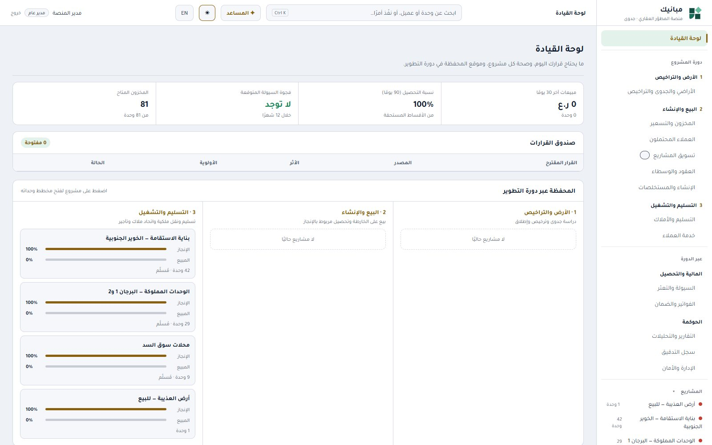
دخول آمن باسم الشركة — ودور لكل موظف
يختار المستخدم المطوّر «المقصورة العقارية» ثم يدخل بكلمة المرور أو بحساب Google الخاص بالشركة. لا يُنشأ حساب من الخارج أبدًا: الهوية تُطابَق على حساب قائم أنشأه مدير النظام. حسابات تجربتكم جاهزة: مدير عام، تسويق ووساطة، مالية وتحصيل، ومهندس — كل دور يرى ما يخصه.
- بيانات الشركة معزولة بصفوفها على مستوى قاعدة البيانات (RLS) عن أي مطوّر آخر على المنصة.
- تحقق ثنائي (TOTP) برموز استرداد، جلسات بأجهزتها وإمكانية إنهائها عن بُعد، وقفل متدرّج ضد التخمين.
- تغيير كلمة المرور إلزامي عند أول دخول، فلا يعرفها غيركم.
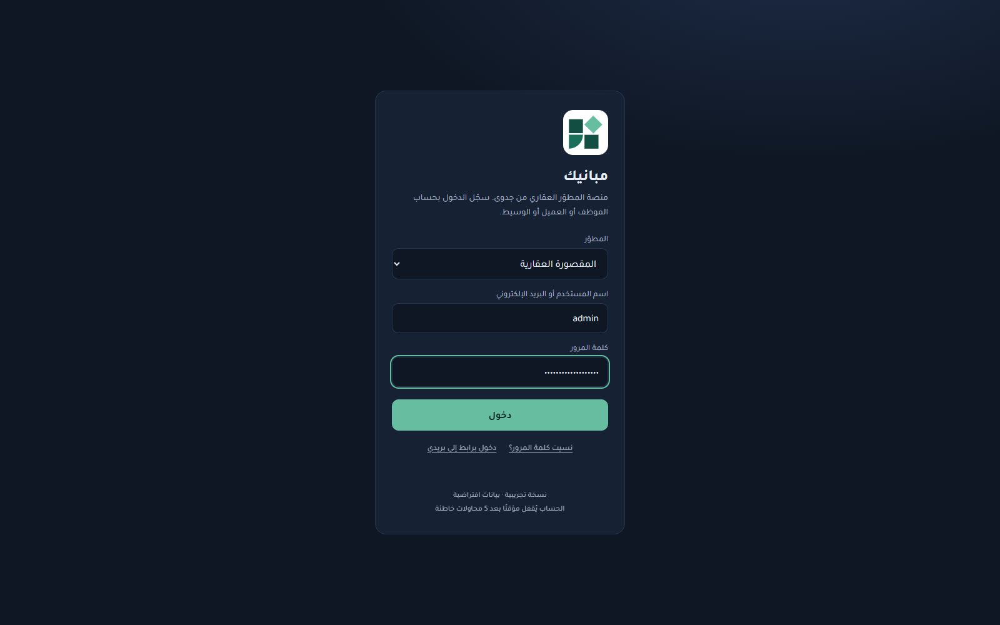
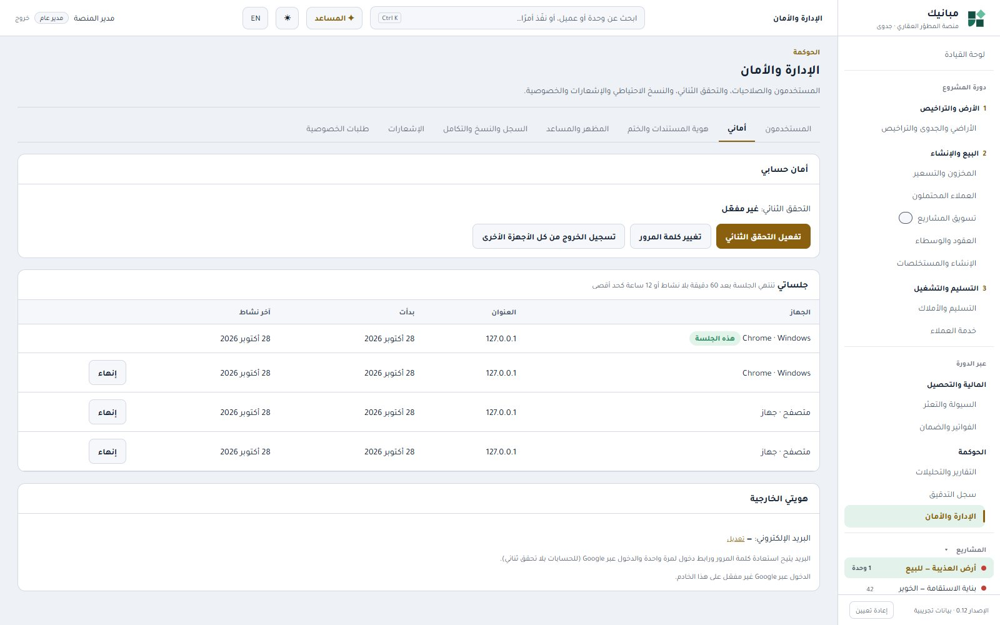
المحفظة كلها في شاشة — بأرقامكم أنتم
اللوحة تعرض المواقع الأربعة بحالتها (كلها مكتملة ومؤجَّرة أو معروضة) ومؤشرات الدورة. لأن المحفظة محفظة تأجير لا بيع، تظهر مؤشرات المبيعات صفرًا بصدق — ومؤشرات التأجير في شاشتها الخاصة. صندوق القرارات يمتلئ حين تبدأ دورة بيع (الأرض) أو حين يمر استحقاق إيجار.
- المحفظة: 81 وحدة — بناية 534 (42)، البرجان (29)، سوق السد (9)، وأرض العذيبة (قطعة واحدة).
- الشريط الجانبي يرتب الشاشات على دورة المشروع، والمساعد الذكي (✦) يجيب عن أي سؤال من البيانات الحية.
- كل شيء بالعربية من اليمين إلى اليسار، مع إنجليزية بضغطة زر، وبأرقام غربية كما طلبت الشركة في مستنداتها.
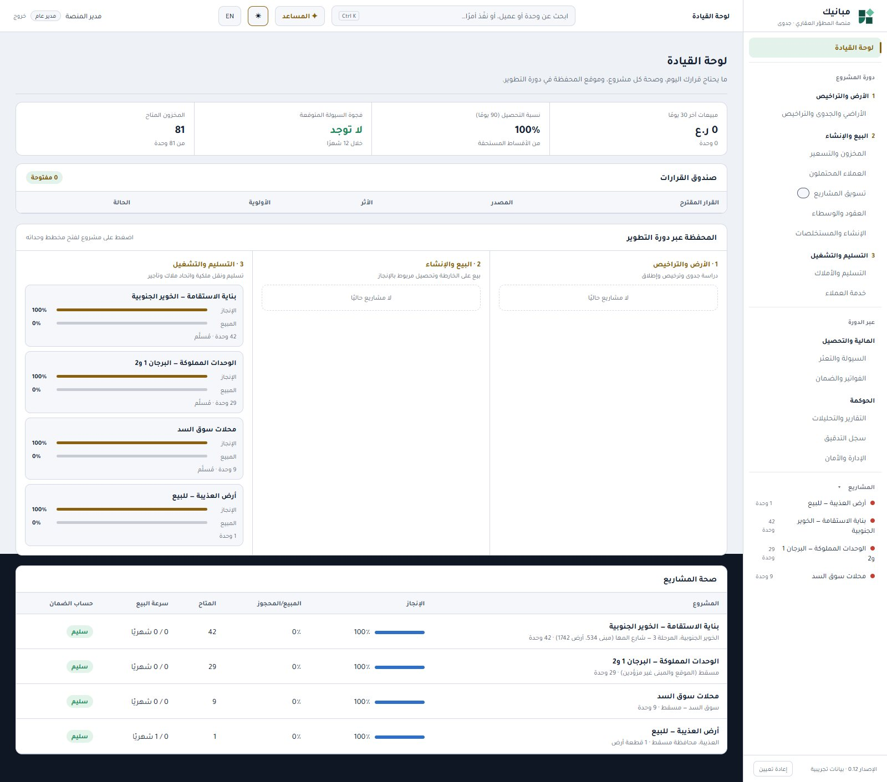
بناية الاستقامة في الخوير الجنوبية: 42 وحدة على مخطط حي
مخطط المبنى كما في تقرير أغسطس: 30 شقة في ستة طوابق (خمس شقق في كل طابق)، والطابق الأرضي بمكاتبه الثلاثة (4 و5 و6) ومحلاته السبعة (1، 2، 3، D/G، Z، H، W)، والقبوان A وB. كل خلية وحدة بحالتها، والضغط عليها يفتح بطاقتها: النوع، الطابق، وعقد الإيجار الساري بمستأجره وإيجاره ومتأخراته.
- 40 عقدًا من 42 وحدة: الشقق الثلاثون كلها مؤجَّرة بإيجارات 160–260 ر.ع شهريًا كما وردت؛ المحل 2 والقبو A شاغران؛ المحلان 3 وD/G محجوزان ببدء عقديهما في سبتمبر وأكتوبر 2026.
- محل W (400 ر.ع شهريًا) الذي أُضيف بتوجيهكم مسجَّل بعقده ودفعة أغسطس المحوَّلة في 2026-09-04؛ مخزن الجمعية بالقبو B مسجَّل بـ250 ر.ع دون تحصيل في أغسطس كما في التقرير.
- أسماء مستأجري الشقق لم ترد في التقرير فوُسمت «الاسم غير مزوَّد» — تُستكمل بملف واحد منكم.
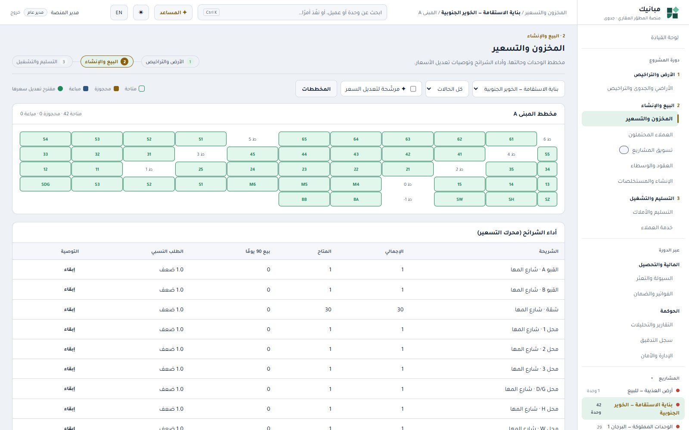
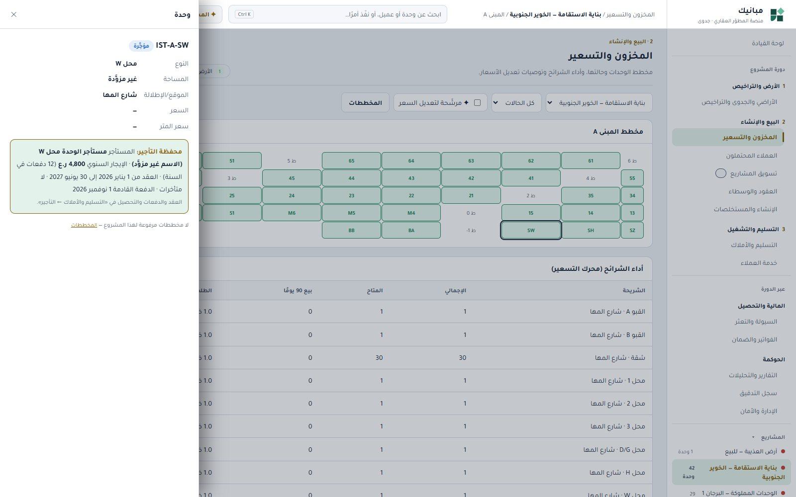
البرجان 1 و2: 29 وحدة بمساحاتها، 8 منها مؤجَّرة لشركات
ملف «الوحدات المشتراة لصالح المقصورة» استُورد كما هو: 18 وحدة في الطابق السابع من البرج الأول (51–165 م²) و11 وحدة في البرج الثاني (52–205 م²)، منها ثماني وحدات مؤجَّرة لشركات بإيجار السنة الأولى والثانية (والثالثة حيث وردت) وعدد المواقف.
- إيجار السنة الأولى هو المعتمد في جدول الدفعات اليوم؛ زيادة السنة الثانية والثالثة مسجَّلة في ملاحظة العقد وتُفعَّل عند تجديده.
- أكبر وحدة مؤجَّرة: 330 في البرج الثاني (205 م²) لشركة البحر للتجارة — 900 ر.ع شهريًا في السنة الأولى، وأربعة مواقف.
- موقع البرجين وتاريخ بدء كل عقد لم يردا في الملف فبقيا فارغين — لذلك تبدأ جداول هذه العقود من شهر الاستيراد لا قبله.
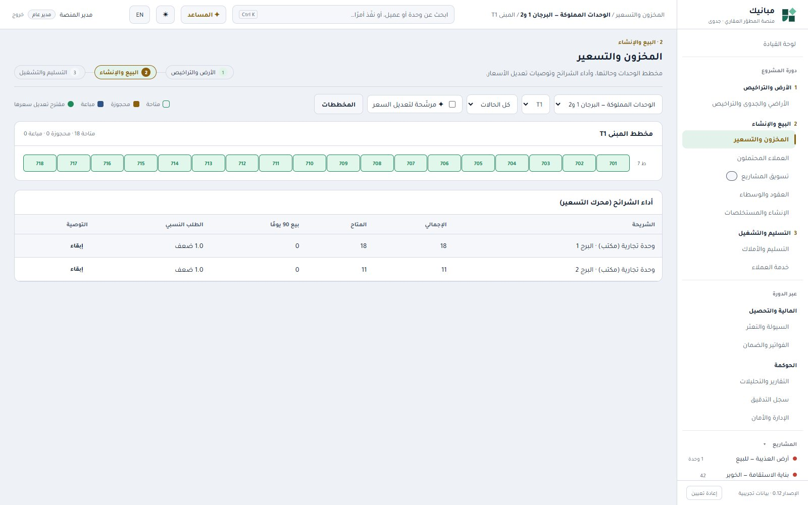
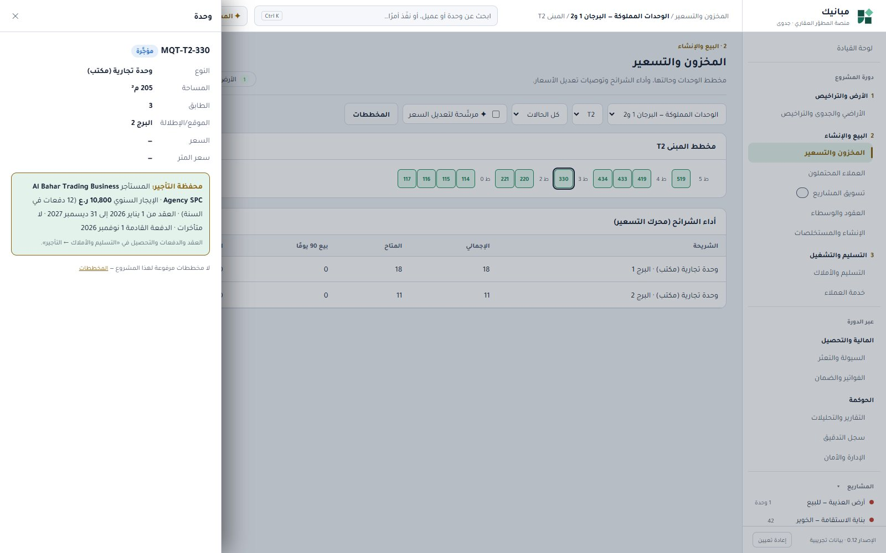
محلات سوق السد التسعة — وأرض العذيبة في قطاع الأراضي الجديد
محلات سوق السد التسعة مسجَّلة في محفظة التأجير بلا عقود (لم تصلنا بعد: أيها مؤجَّر وبكم). وأرض العذيبة أول مشروع في قطاع الأراضي الذي أُضيف إلى المنصة بتوجيهكم: مشروع من نوع «أرض» بقطعة واحدة تظهر على مخطط عام للقطع، وتُباع بالمسار نفسه (عرض سعر ⟵ حجز ⟵ عقد) بعد تحديد سعرها.
- سعر الأرض ومساحتها لم يُزوَّدا، فيظهران «—» و«غير مزوَّدة»؛ وأي محاولة لإصدار عرض سعر أو حجز قبل تحديد السعر تُرفض برسالة واضحة لا بخطأ.
- في التقارير تظهر الأرض تحت «أراضٍ» لا «أبراج»، وفي لوحة التسويق مشروعًا للبيع بوحدة واحدة.
- حين تصل عقود سوق السد تُدخل من شاشة التأجير مباشرة («+ عقد إيجار») ويولَّد جدول دفعاتها.
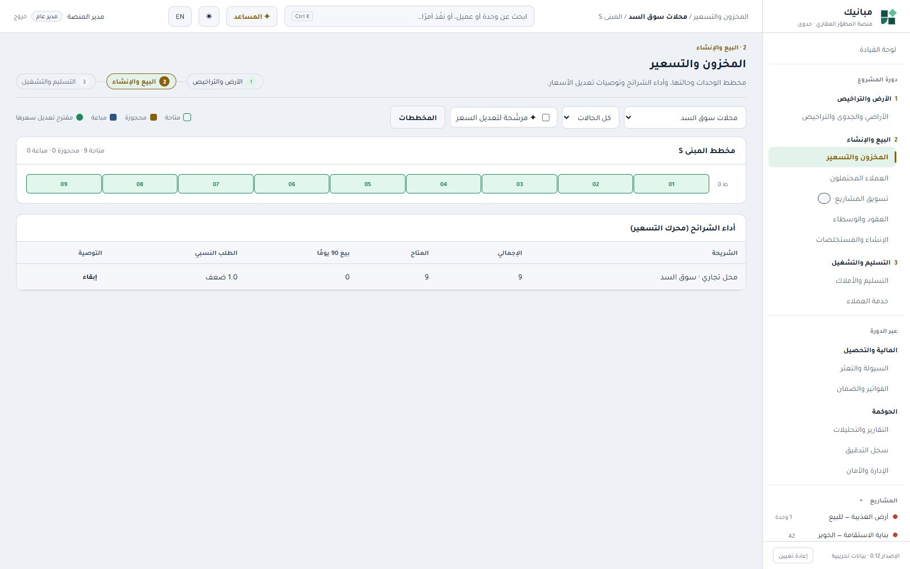
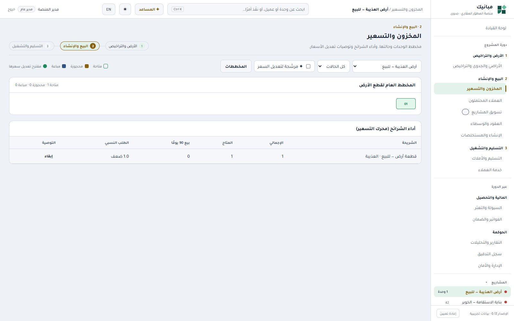
محفظة التأجير: 48 عقدًا، إشغال 60٪، إيجار سنوي 203,124 ر.ع، متأخرات 5,310 ر.ع
هذه هي الشاشة التي ستعمل عليها الشركة يوميًا. المؤشرات الأربعة تُحسب حيًّا من العقود والدفعات: وحدات المحفظة، نسبة الإشغال، الإيجار السنوي التعاقدي، والمتأخرات. والجدول يضم كل عقد: الوحدة، المستأجر، المدة، الإيجار السنوي، متأخراته إن وُجدت، وتنبيه التجديد قبل انتهائه بتسعين يومًا.
- نسبة الإشغال 60٪ لأن محلات سوق السد التسعة و21 وحدة في البرجين بلا عقود مسجَّلة — ترتفع فور إدخال عقودها الفعلية.
- الإيجار الشهري في التقرير حُوِّل إلى إيجار سنوي تعاقدي (× 12) بدفعات شهرية؛ عقود الشقق حتى 2027-06-30 وعقود البرجين حتى 2027-12-31 حتى تصلنا تواريخها الحقيقية.
- عقد جديد يُنشأ من الشاشة بتاريخ البداية والمدة والإيجار ودورية الدفع، فيولَّد جدول الدفعات ويُذكَّر بتوثيقه لدى البلدية.
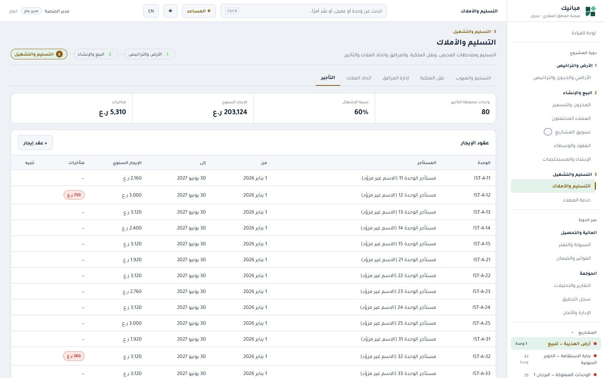
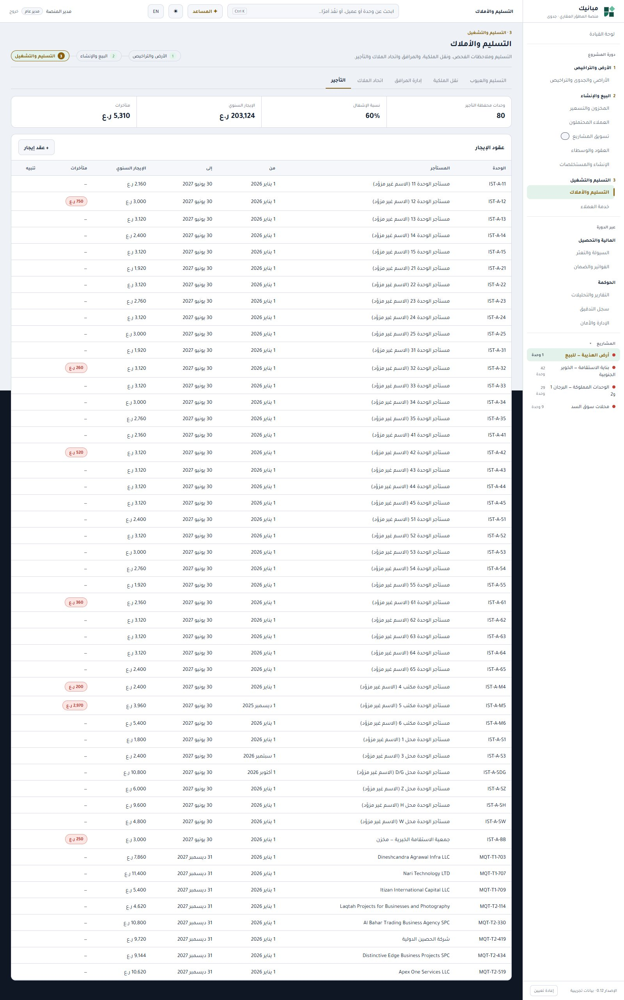
متأخرات أغسطس كما وردت — وزر تحصيل لكل دفعة
بطاقة العقد تعرض جدول دفعاته: المسدَّد بتاريخه، والمتأخر، والقادم. المثال الحقيقي: مكتب 5 لم يدفع من ديسمبر 2025 إلى أغسطس 2026 — تسع دفعات × 330 = 2,970 ر.ع، تظهر «متأخرة» واحدة واحدة مع زر «تحصيل» يسجّل الدفعة ويُصدر فاتورتها.
- المتأخرات المسجَّلة من التقرير: مكتب 5 (2,970)، الشقة 12 منذ يونيو (750)، الشقة 42 فبراير وأغسطس (520)، الشقة 61 يوليو وأغسطس (360)، الشقة 32 أغسطس (260)، مكتب 4 أغسطس (200)، ومخزن الجمعية (250) — المجموع 5,310 ر.ع.
- تحصيل أغسطس الموثَّق مسجَّل بتاريخه وطريقته (شيك أو تحويل): 25 شقة ومكتبان وأربعة محلات، والوحدة 63 سددت يوليو وأغسطس معًا.
- الأشهر غير الموثَّقة (قبل أغسطس) لا تظهر مسددة ولا متأخرة — حين تصلنا تقارير الأشهر السابقة أو اللاحقة تُستورد بالطريقة نفسها.
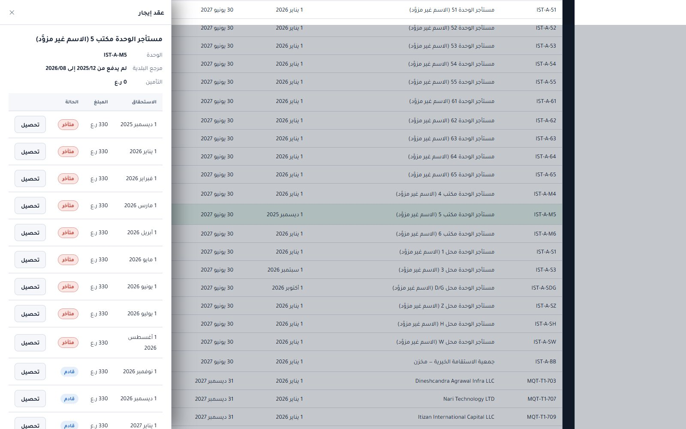
اسألوا المنصة عن محفظتكم — فتجيب من بياناتكم الحية
المساعد (✦ في الشريط العلوي) يجيب عن أسئلة التأجير والمحفظة والتحصيل من قاعدة بياناتكم مباشرة، ويذكر مصدر كل رقم. يعمل بمحرك محلي داخل المنصة دون إرسال بياناتكم إلى أي خدمة خارجية، ويمكن ربطه بنموذج لغوي اختياريًا.
- «ما الإيجارات المتأخرة؟» ⟵ 48 عقدًا ساريًا بإجمالي 203,124 ر.ع، 19 دفعة متأخرة بقيمة 5,310 ر.ع، و32 وحدة تأجير شاغرة — كما في اللقطة.
- «ما ملخص المحفظة؟» ⟵ المواقع الأربعة بوحداتها وحالتها.
- يقترح أسئلة تالية، ويشرح كيف تُنفَّذ المهام في المنصة (مثلًا: كيف أسجّل عقد إيجار؟).
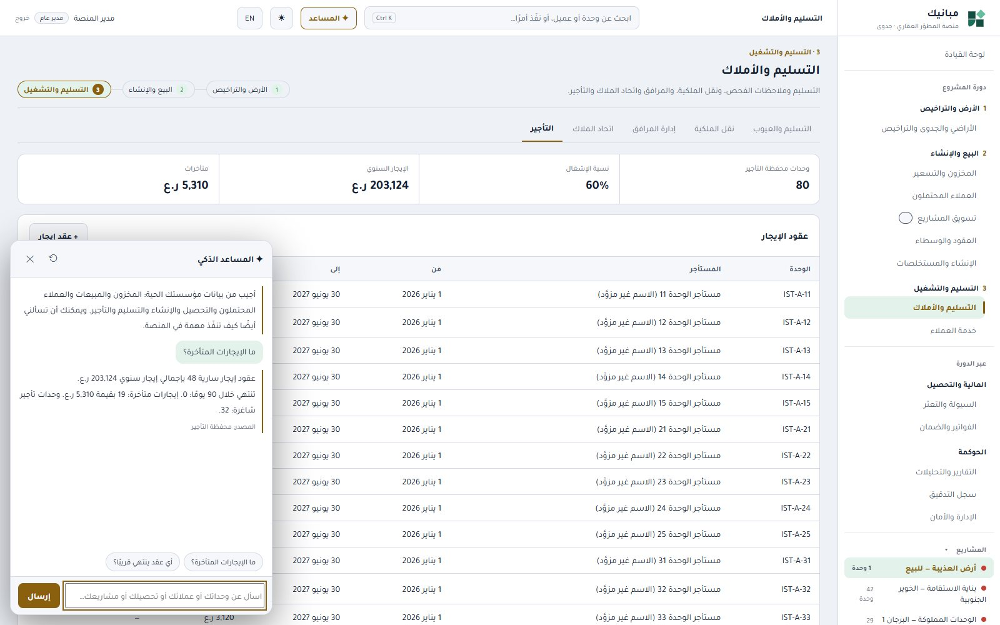
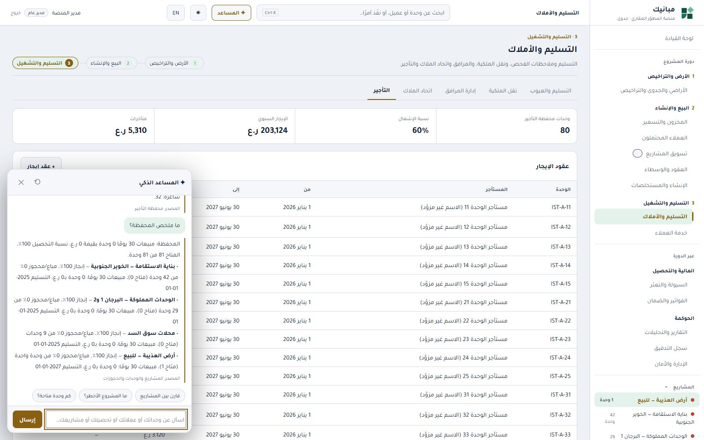
تقرير شهري بترويستكم بضغطة — ومنشئ تقارير بلا SQL
تقارير جاهزة (المحفظة، التحصيل، السيولة، المخزون، وغيرها) بمعاملات ورسوم، تُصدَّر PDF بترويسة الشركة وشعارها أو CSV، وتُجدول بالبريد. ومنشئ تقارير على بيانات معتمدة بفلاتر وتجميع ورسوم لمن أراد تقريرًا على مقاسه — مثل كشف تحصيل شهري لكل موقع.
- التقرير المرفق «لوحة المحفظة» صدر من المنصة بترويسة المقصورة: 81 وحدة، المواقع الأربعة بحالتها، ولا مبيعات.
- تقرير التحصيل والمتأخرات مبني اليوم على أقساط البيع؛ متأخرات الإيجار في شاشة التأجير وفي المساعد — وتقرير إيجار شهري مخصص (بديل تقرير المدير العقاري) أول ما نضيفه عند اعتماد التجربة.
- الرسوم تُرسم داخل المنصة وفي PDF بالمحرّك نفسه، بلا مكتبة خارجية.
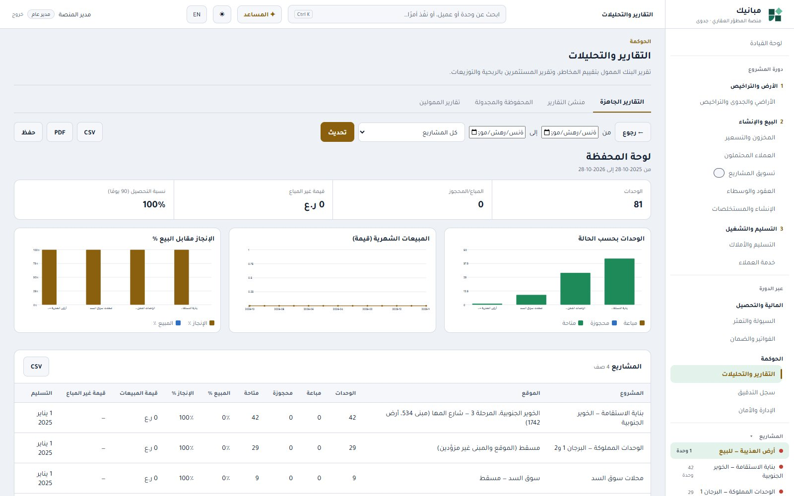
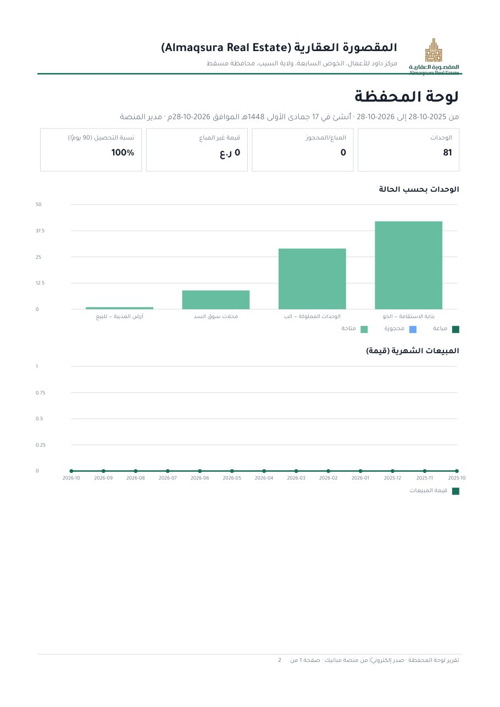
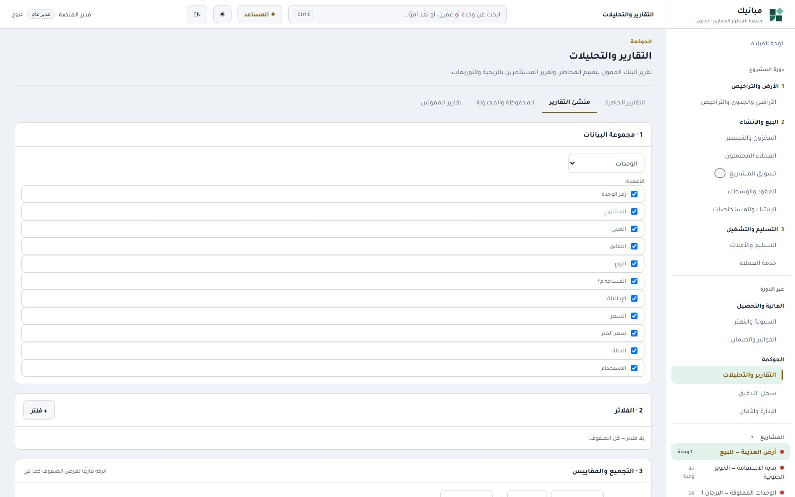
لوحة التسويق ترى الأرض مشروعًا للبيع — والاستوديو ينتظر صورتها
لوحة التسويق تصنّف كل موقع من بياناته الحية؛ المواقع الثلاثة المؤجَّرة تظهر «مكتملة»، وأرض العذيبة المشروع الوحيد المعروض للبيع. حين يُحدَّد سعرها تبدأ دورة بيعها من هنا: حملة بعرض غير ربوي، عملاء محتملون، عرض سعر ثم حجز وعقد — كلها بترويستكم.
- استوديو الإعلانات (ستة قوالب بثلاثة مقاسات، نص عربي مركَّب برمجيًا) يحتاج صورة العقار؛ لم نُنتج إعلانًا لأن الشركة لم تزوّدنا بصور ولا بسعر — وهذا من بنود «ما ينقص».
- الوسطاء يُسجَّلون بصلاحيات وعمولاتهم تُحتسب عند تحقق شروطها — مناسب لبيع الأرض عبر وسطاء.
- التنبيهات التسويقية تُسجَّل يوميًا من حركة السوق حين تبدأ دورة البيع.
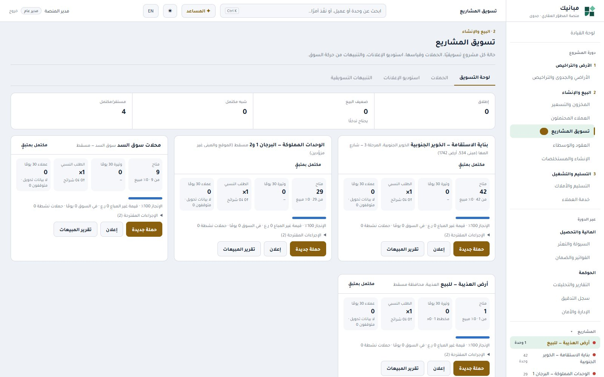
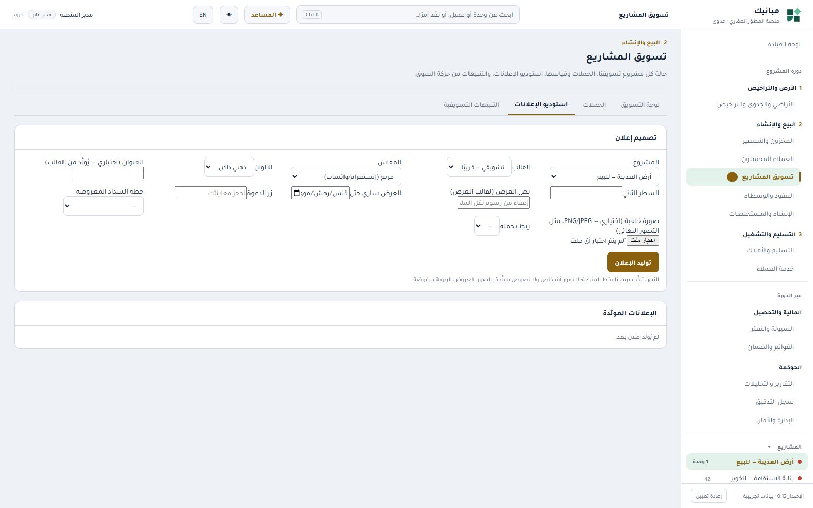
سجل تدقيق لا يُمحى، وهوية المستندات بترويستكم
كل فعل في المنصة — تحصيل، عقد جديد، تعديل — سطر في سجل تدقيق مسلسل ببصمة لا يستطيع أحد تعديله؛ البيانات الشخصية مشفّرة في القاعدة؛ وكل كيان معزول بصفوفه على مستوى قاعدة البيانات.
- المستخدمون والأدوار: إضافة، تعديل البريد، إنهاء الجلسات، إعادة ضبط التحقق الثنائي.
- هوية المستندات والختم: اسم الشركة والعنوان مسجَّلان (مركز داود للأعمال، الخوض السابعة)؛ الهاتف والبريد والسجل التجاري والرقم الضريبي فارغة حتى تزوّدونا بها، والشعار بدقة الموقع حتى تصل نسخة الطباعة.
- صفحة تحقق عامة لكل مستند يصدر (فاتورة، إيصال، عقد) برمز QR دون كشف بيانات شخصية.
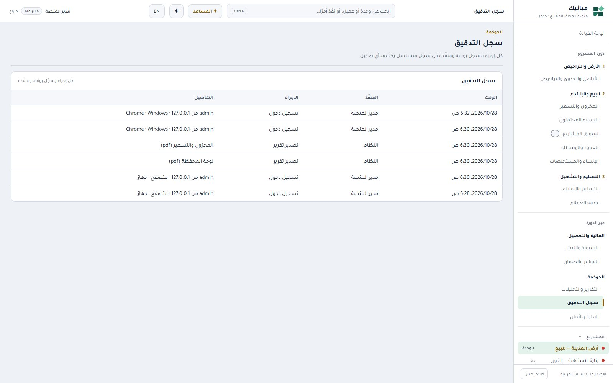
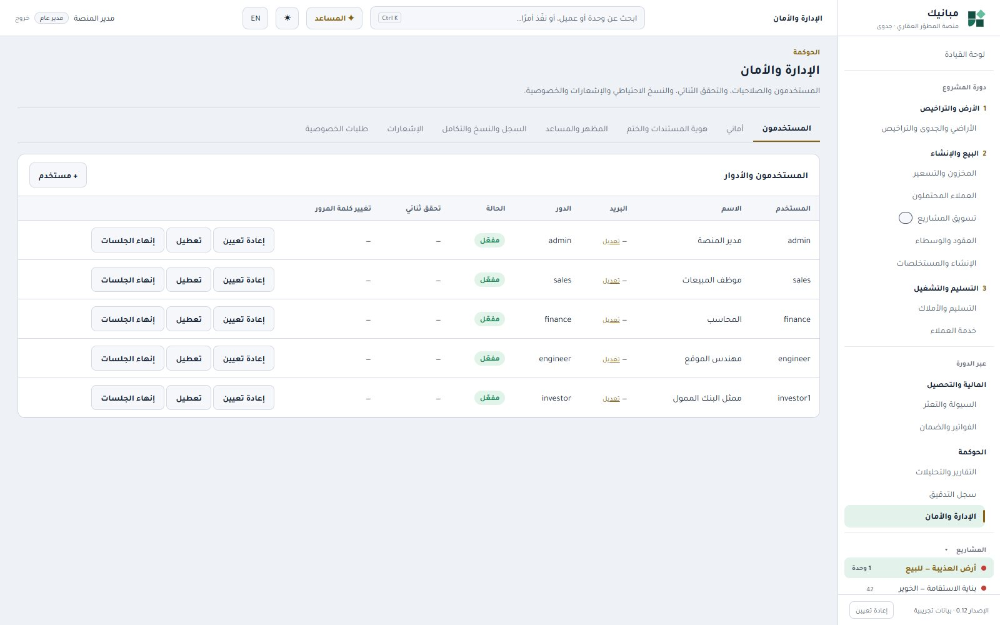
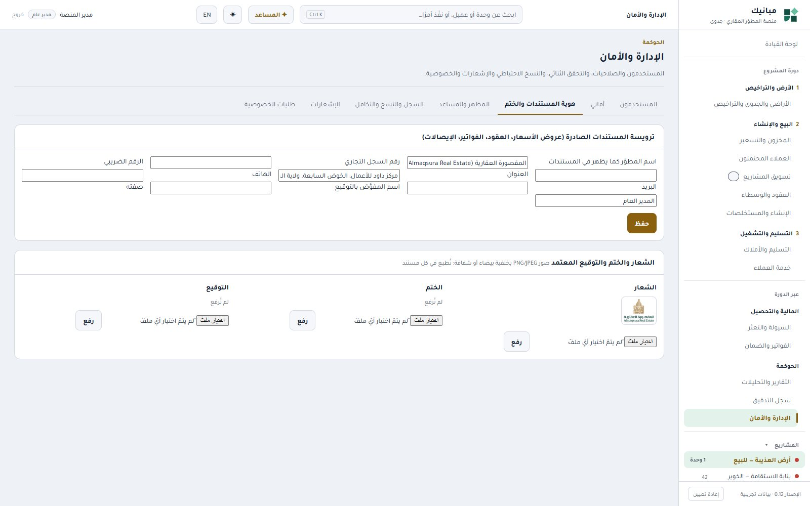
ما ينقص لإكمال الصورة — نستلمه في الاجتماع
كل ما في المنصة اليوم من مصادركم الثلاثة. لتكتمل المحفظة ويبدأ الفريق العمل الفعلي نحتاج من الشركة:
- أسماء مستأجري شقق بناية 534 وتواريخ بدء عقودهمالتقرير يذكر أرقام الشقق وإيجاراتها لا المستأجرين؛ ملف واحد (الوحدة، الاسم، الهاتف، بدء العقد ومدته) يكمل الأربعين عقدًا.
- موقع البرجين 1 و2 وتواريخ عقود الوحدات الثمانيالملف يذكر الوحدات والمساحات والإيجارات لا الموقع ولا تاريخ بدء كل عقد.
- مساحات محلات سوق السد وعقودهاأيها مؤجَّر، لمن، بكم، ومنذ متى — لتدخل في الإشغال والمتأخرات.
- أرض العذيبة: المساحة والسعر والكروكيبهما تبدأ دورة البيع (عرض سعر وحجز وعقد) ويُنتج إعلانها من الاستوديو.
- تقارير سبتمبر وأكتوبر 2026تُستورد بالطريقة نفسها فتكتمل حركة التحصيل، أو يسجّل الفريق تحصيلها مباشرة من الشاشة.
- بيانات الهوية والتواصلالهاتف والبريد الرسميان، السجل التجاري، الرقم الضريبي، اسم الموقّع المعتمد، والشعار والختم والتوقيع بدقة الطباعة.
- ترتيب العلاقة مع المدير العقاريهل يُدخل المدير العقاري (البراعة العالمية) التحصيل في المنصة بحساب خاص، أم تُستورد تقاريره الشهرية؟ المنصة تدعم الحالتين.
- صيغة عقد الإيجار النموذجيلإصدار عقود الإيجار PDF من المنصة بصيغتكم المعتمدة شرعيًا وقانونيًا.
- حساب بريد SMTP ونطاقلإرسال الفواتير والتنبيهات وروابط الدخول من بريد الشركة؛ اليوم البريد في وضع «صندوق صادر».
- تخزين دائم للمرفقاتعقود الإيجار الممسوحة والصور تحتاج تخزينًا دائمًا (Volume أو S3) قبل أول استعمال فعلي.
صيغتا التعاون
تُترك الأرقام للاجتماع. الفرق الجوهري بين الصيغتين: من يشغّل، ومن يملك، وكيف تصل التحديثات.
| الوجه | اشتراك على منصة جدوى المستضافة | نسخة خاصة على بنية الشركة |
|---|---|---|
| الملكية | ترخيص استخدام؛ الشيفرة والتشغيل لدى جدوى | نسخة مرخَّصة تُنشر على خوادم الشركة (Docker + PostgreSQL) |
| العزل والبيانات | كل كيان معزول بصفوفه (RLS) على قاعدة مشتركة؛ البيانات ملك الشركة وتُصدَّر عند الطلب | قاعدة بيانات خاصة بالكامل داخل بنية الشركة |
| الكيانات المتعددة | مطوّر لكل كيان في المجموعة على الاشتراك نفسه | مطوّر لكل كيان داخل النسخة الخاصة |
| التحديثات | مستمرة وتلقائية مع كل إصدار | بحسب اتفاق الصيانة؛ تُطبَّق على نسخة الشركة |
| النسخ الاحتياطي | يومي من جدوى مع تمرين استرجاع | مسؤولية فريق الشركة بدليل التشغيل RUNBOOK |
| الدعم والتدريب | ضمن الاشتراك | ضمن عقد التنفيذ والصيانة |
| الكلفة الأولية | ||
| الكلفة الدورية |
الخانات الفارغة تُملأ في الاجتماع. في الحالتين: ترخيص واحد لمطوّر واحد، والبيانات ملك الشركة، ودليل التشغيل ودليل الأمان ضمن التسليم.
ما يجب أن يُقال بصراحة
- البيانات حقيقية لكنها بقدر ما وصلنا: تقرير شهر واحد (أغسطس 2026) لبناية 534، وملف الوحدات المملوكة، وعدد محلات سوق السد، ووجود أرض العذيبة. الأشهر غير الموثَّقة لا تظهر مسددة ولا متأخرة، فالمتأخرات (5,310 ر.ع) هي متأخرات التقرير لا رصيد المحفظة الكامل.
- ما لم يُزوَّد تُرك فارغًا عمدًا: أسماء مستأجري الشقق، موقع البرجين، مساحات وعقود سوق السد، مساحة الأرض وسعرها، الهاتف والبريد والسجل التجاري. ولتعمل جداول الدفعات افترضنا بدء عقود الشقق في 2026-01-01 ونهايتها 2027-06-30، وعقود البرجين حتى 2027-12-31 — تُصحَّح بتواريخكم.
- نسبة الإشغال (60٪) منخفضة ظاهريًا لأن 30 وحدة بلا عقود مسجَّلة لدينا لا لأنها شاغرة فعلًا.
- المنصة تدير بيانات عقد الإيجار (المستأجر، الدفعات، التجديد) ولا تُصدر بعدُ نموذج عقد إيجار PDF كما تُصدر عقد البيع؛ يُضاف عند اعتماد صيغتكم. وتقرير إيجار شهري بديلًا لتقرير المدير العقاري ليس ضمن التقارير الجاهزة اليوم (منشئ التقارير يغطي جزءًا منه).
- زر «تحصيل» يسجّل الدفعة بتاريخ اليوم ويُصدر فاتورة — فلا يُضغط إلا عند استلام فعلي؛ وتسجيل دفعة بتاريخ سابق أو بطريقة الدفع (شيك/تحويل) من الشاشة ليس متاحًا بعد (الاستيراد يدعمهما).
- لم نُنتج إعلانات ولا صورًا لعقاراتكم: الاستوديو يحتاج صورة العقار، ولا تصورات لدينا؛ وغلاف هذا الدليل لقطة من المنصة لا صورة للبناية.
- إعادة استيراد البيانات على بيئة العرض (عند وصول تقرير جديد مثلًا) تُعيد بناء محفظة المقصورة من الملف وتمحو ما أُدخل يدويًا بعد آخر استيراد — لذلك بعد بدء العمل الفعلي يُفضَّل الإدخال من الشاشات لا إعادة الاستيراد.
- البريد في وضع «صندوق صادر» حتى يُضبط SMTP؛ وواتساب عبر روابط wa.me لا عبر Business API؛ والملفات المرفوعة على بيئة العرض مؤقتة حتى يُربط تخزين دائم.
- لقطات هذا الدليل التُقطت من نسخة محلية مطابقة للإصدار المنشور (0.18.2) على البيانات نفسها، لأن كلمة مرور بيئة العرض لا تُكتب في أي ملف؛ وأثناء إعدادها اكتُشف وأُصلح خلل في بطاقة الوحدة بلا سعر.
ما عدا ذلك يعمل اليوم على الرابط الحي ببياناتكم، ويمكن لفريقكم الدخول إليه بحسابات التجربة.
الخطوة التالية: جلسة عمل مع فريق المالية
نقترح جلسة عمل لمدة ساعتين في مقر الشركة بمركز داود للأعمال (الخوض السابعة) مع المسؤول المالي ومن يتابع المدير العقاري: نراجع معًا المحفظة كما ظهرت في المنصة، نستلم البيانات الناقصة، ونسجّل تحصيل سبتمبر وأكتوبر حيًّا على الشاشة — ثم نتفق على الصيغة والجدول الزمني.
- جدوى للدراسات والتطوير — مسقط · jadwa.om
- رابط المنصة: https://mabaneek.com
- المطوّر في شاشة الدخول: «المقصورة العقارية» — حسابات التجربة في دليل التجربة المرفق